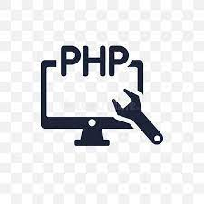

O que é o PHP ?? 
PHP é um acrônimo recursivo para PHP: Hypertext Preprocessor (Pré-Processador de Hipertexto), que originalmente se chamava Personal Home Page (Página Inicial Pessoal). Ele também é um subconjunto de linguagens de scripts como JavaScript e Python. A diferença é que PHP costuma ser mais usado para comunicação do lado do servidor (back-end). Uma linguagem de script serve para automatizar a execução de tarefas num ambiente de tempo de execução especial. Isso inclui dizer para uma página estática (construída com HTML e CSS) para executar ações específicas com regras que você definiu anteriormente. Por exemplo, você pode usar um script para validar uma forma de garantir que todos os campos de um formulário foram preenchidos antes que eles sejam enviados de volta para o servidor. O script, então, iria rodar e checar todos os campos quando um usuário enviar o formulário. Se um deles estiver vazio, um texto de alerta seria exibido para informar o usuário disso. Outros usos comuns de linguagens de script incluem mostrar um efeito de menu drop-down quando o cursor do mouse é passado sobre o menu principal, exibir botões de rolagem e animações, abrir caixas de diálogo, e assim em diante.
Lado do Servidor (backend) e Lado do Cliente (frontend)
Linguagens de script podem rodar tanto do lado do servidor (backend) quanto do lado do cliente (frontend). Scripts do tipo frontend são processados pelos navegadores. Quando o seu browser – também conhecido como o cliente – solicita uma página contendo scripts do lado do cliente, o servidor responde enviando os códigos-fontes que são executáveis pelo navegador. Por outro lado, linguagem de scripts do tipo backend significam que esses scripts são executados nos servidores antes de serem enviados ao navegador. Então ao invés de mandar o código-fonte, os servidores da web processam (parse) os códigos antes ao transformá-los num formato HTML puro.
Por Que Usar PHP?
PHP não é a única linguagem de script server-side disponível – existem muitas outras disponíveis. Entretanto, ela tem uma vantagem sobre seus competidores se você está rodando um site WordPress. Como mencionamos anteriormente, o WordPress é construído usando PHP. Então ao usar essa linguagem, ele pode aumentar drasticamente a quantidade de customização que você pode ter no seu site. Você pode usá-lo para modificar os plugins e temas disponíveis ou até mesmo criar o seu próprio. Se você quer se tornar um desenvolvedor WordPress, aprender PHP é uma obrigação.
Bem, com os computadores funciona mais ou menos da mesma maneira. Nós temos que aprender as linguagens de programação para que a máquina responda aos nossos comandos. a programação web é justamente esta comunicação, que consegue traduzir as informações para que o computador interprete e devolva um resultado ao usuário final. falando em scripts, com o PHP você pode criar um script e utilizá-lo sem a necessidade de ter um navegador. Você precisa somente do interpretador. Essa função é muito útil para programadores que desejam executar o script para criação de APIs. O recurso é chamado de execução de script via linha de comando. Você também pode criar aplicações para desktop. Não é muito comum, mas se você é um programador que gosta de desafios, conseguirá utilizar os serviços mais avançados. Para fazer isso, você precisa utilizar o PHP-GTK, uma extensão do PHP que vai te ajudar a criar essas aplicações.
Exemplo de Startups que ultilizam do PHP
Como exemplos de Startups que utilizam PHP temos o Facebook a Slack o Lyft o Bitpanda tambem a delivery hero e a Tesla entre muitos outros